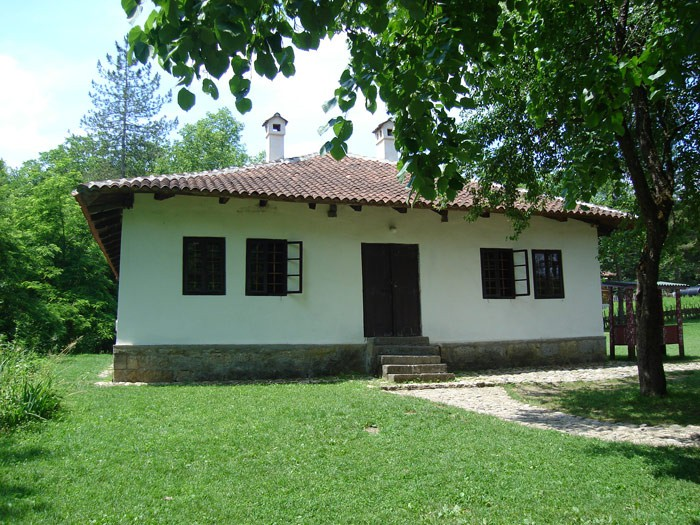

| Почетна | Почетак уметничког рада | Њена литература | Одликовања и признања | Последње године и смрт |
Десанка Максимовић је била најстарије дете оца Михаила, учитеља, и мајке Драгиње. Михаило Максимовић је одмах по њеном рођењу добио премештење, а породица се преселила у Бранковину. Детињство је провела у Бранковини, а гимназију је завршила у Ваљеву. Почетком августа 1933. удала се за Сергеја Сластикова. Није имала деце.
.jpg)
Студирала је на Одсеку за светску књижевност, општу историју и историју уметности Филозофског факултета у Београду. Након дипломирања, Десанка Максимовић је најпре радила у обреновачкој гимназији, а потом као замена у Трећој женској гимназији у Београду. Провела је годину дана у Паризу на усавршавању као стипендиста француске владе. После око годину дана рада у учитељској школи у Дубровнику од 3. септембра 1925. године, вратила се у Београд, где је радила у Првој женској гимназији (данас Пета београдска гимназија). Једна од њених ученица била је и Мира Алечковић, која је постала и песникиња и блиска пријатељица Десанке Максимовић. Почетком Другог светског рата одлази у пензију, али се 1944. године враћа у службу и остаје у истој школи до коначног пензионисања 1953.
Кућа Десанке Максимовић